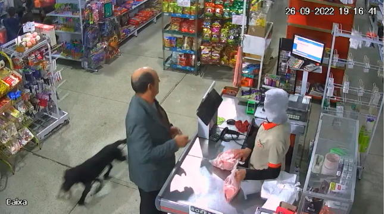

VÍDEO: Tartaruga gigante é resgatada com queimaduras em meio a incêndio na zona rural do Tocantins

Com Tarcísio na garupa e sem capacete, Bolsonaro participa de motociata em SP

g1, TV Globo e GloboNews divulgam pesquisas presidenciais de Ipec e Datafolha a partir das 18h, com destaque para votos válidos

Cidades brasileiras terão transporte público gratuito no dia da votação

Centrão se mexe por mais poder em 2023 e PP e União Brasil discutem fusão por superbancada

'Inegável sucesso das urnas', diz Pacheco a representantes de 26 países que acompanharão eleições

Datafolha: 35% não se sentem à vontade para declarar voto para presidente

Datafolha: 53% admitem ter mudado de comportamento nas redes sociais por motivos políticos